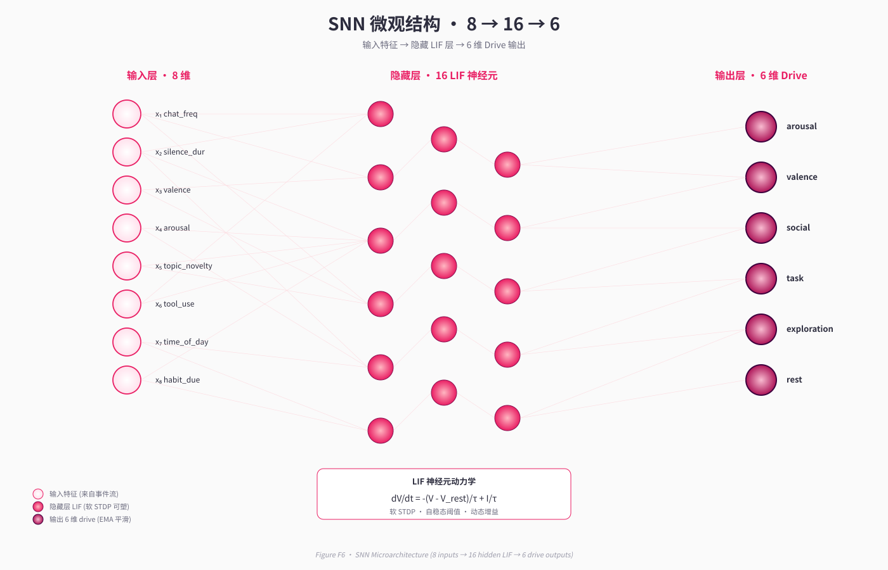
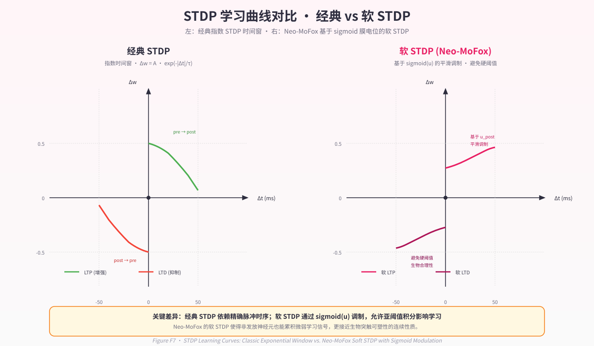

第 5 章 · 皮层下层 I：脉冲神经网络¶
"大脑皮层只负责'想'，其余脑区负责'持续存在'。一个人在深度睡眠时（皮层基本关闭），下丘脑仍在调节体温、心率、呼吸。这就是连续存在——它不依赖高级认知。"
—— 引自Abstract/SNN_与系统智能_深度思考.md
5.1 设计动机：为什么是 SNN？¶
当前主流 LLM Agent 系统的共同困境在于：状态的连续性完全依赖 prompt 工程。 每一次 LLM 调用都是一次全新的推理过程，"连续性"通过文本拼接传递——"过了 30 分钟"和"过了 3 天"对模型而言没有内在区别，仅仅是 token 序列中的不同数字。这种范式下，情绪的惯性、行为的余韵、时间的物理流逝，全部由外部系统以描述性文本注入，系统本身不具备任何连续演化的状态底座。
脉冲神经网络（Spiking Neural Network, SNN）的引入是对这一困境的根本性回应。SNN 不是为了让 LLM "想得更好"，而是为了让系统"活着"（Abstract/SNN_与系统智能_深度思考.md §2.2）。它承载三个传统架构无法提供的核心能力：
- 时间连续的状态基质：膜电位的持续衰减、突触痕迹的指数衰减，使得"上一个心跳的情绪"会物理性地影响下一个心跳，而非靠 prompt 描述。
- 在线局部学习：STDP（Spike-Timing-Dependent Plasticity, 脉冲时序依赖可塑性）规则不依赖反向传播，不需要训练集，边运行边适应。系统的"性格"会随时间真正演化。
- 低开销持续运行：SNN 的稀疏激活特性使其可在 LLM 不活跃时以微秒级开销运行，心跳之间不再是空白。
本章将详细剖析 Neo-MoFox 中 SNN 的工程实现，从神经元模型、网络拓扑、学习规则到输入输出语义，呈现一个完整的、可复现的皮层下系统设计。
5.2 LIF 神经元模型¶
Neo-MoFox 采用经典的 LIF（Leaky Integrate-and-Fire, 漏电积分发放）神经元模型作为基本计算单元（plugins/life_engine/snn/core.py:24）。LIF 模型以最小的计算开销捕捉生物神经元的关键动态：膜电位的泄漏、电流的积分、阈值的发放。
5.2.1 膜电位动力学方程¶
LIF 神经元的膜电位 \(V(t)\) 演化遵循如下 ODE：
其中： - \(V_{\text{rest}}\)：静息电位（mV），无输入时的稳定电位； - \(\tau\)：膜电位时间常数（ms），控制泄漏速度； - \(I(t)\)：突触输入电流（mA）。
当 \(V(t) \geq V_{\text{threshold}}\) 时，神经元发放脉冲（spike），膜电位立即重置为 \(V_{\text{reset}}\)。
离散化后的单步更新（core.py:56）：
dv = (-(self.v - self.rest) + current) / self.tau * dt
self.v += dv
np.clip(self.v, -10.0, 10.0, out=self.v)
spikes = self.v >= self.threshold
self.v[spikes] = self.reset
5.2.2 参数配置¶
Neo-MoFox 针对不同层神经元设置差异化的时间常数和阈值（core.py:248-249）：
| 层 | 数量 | \(\tau\) (ms) | \(V_{\text{threshold}}\) | \(V_{\text{reset}}\) | \(V_{\text{rest}}\) |
|---|---|---|---|---|---|
| 隐藏层 | 16 | 12.0 | 0.15 | 0.0 | 0.0 |
| 输出层 | 6 | 25.0 | 0.20 | 0.0 | 0.0 |
隐藏层的短时间常数（12 ms）使其对输入快速响应，适合捕捉事件级别的瞬态特征；输出层的长时间常数（25 ms）和高阈值则提供平滑的驱动输出，抑制高频噪声。
5.2.3 decay_only vs step：心跳间的无输入演化¶
这是 Neo-MoFox SNN 设计的一个关键创新。传统 SNN 实现要么在每个时间步执行完整更新，要么在无输入时直接暂停。Neo-MoFox 引入了两种更新模式（core.py:54, 63）：
| 方法 | 功能 | 使用场景 |
|---|---|---|
step(current, dt) |
积分电流 + 噪声注入 + 发放检测 + STDP 更新 | 有真实输入时（心跳时刻） |
decay_only(dt) |
仅膜电位泄漏，spikes[:] = False，不学习 |
心跳间隔的零输入 tick |
设计意图（core.py:7）：
"分离 decay_only() 与 step()：零输入 tick 不再执行完整 step，避免淹没信号。"
这一设计兑现了"连续性原则"：即使在两次 LLM 调用之间，SNN 仍在以低开销模式运行，膜电位持续衰减，时间的流逝在神经元状态中留下物理性痕迹。重启后恢复状态时，膜电位的差异可精确反映停机时长。
5.3 网络拓扑：8 → 16 → 6¶
Neo-MoFox 的 SNN 采用三层前馈结构（core.py:214）：
输入层 (8 维特征向量)
│
▼ [STDP 突触 W_in_hid (16×8)]
│
隐藏层 (16 LIF 神经元, τ=12ms)
│
▼ [STDP 突触 W_hid_out (6×16)]
│
输出层 (6 LIF 神经元, τ=25ms)
│
▼ [EMA 平滑, α=0.15]
│
输出 (6 维 drive 向量)
这一拓扑设计遵循以下原则：
- 小规模参数：总参数量 \((16 \times 8) + (6 \times 16) = 224\) 个权重，可在 CPU 上微秒级更新。
- 单隐藏层：避免深层网络的训练不稳定性，聚焦于局部学习的可解释性。
- 非对称层宽：隐藏层维度（16）为输入（8）的 2 倍，为输出（6）的 2.67 倍，提供足够的表达空间而不过度冗余。
5.4 软 STDP 学习规则：修复二值死锁的工程改造¶
STDP 是 Hebbian 学习的时序精细化："如果前突触神经元在后突触神经元发放前不久活跃，则增强连接；如果在之后活跃,则削弱连接。" 传统 STDP 依赖二值脉冲信号，但在低放电率场景下会陷入"学习死锁"：神经元不放电 → 无 STDP 信号 → 权重不更新 → 神经元继续不放电。
Neo-MoFox 的 v2 软 STDP（core.py:92）通过引入连续活跃度打破这一循环。
5.4.1 连续活跃度定义¶
软 STDP 不使用二值脉冲 \(s \in \{0, 1\}\)，而是用膜电位的 sigmoid 函数计算连续活跃度（core.py:209）：
其中 \(k=8.0\) 为陡峭度，\(V_c=0.0\) 为中心。这使得膜电位接近阈值但未发放时仍有 \(a \approx 0.3 \sim 0.7\) 的活跃度贡献。
5.4.2 突触痕迹更新¶
STDP 维护指数衰减的突触痕迹（trace）来捕捉历史活动（core.py:157-158）：
其中 \(\lambda = 0.90\) 为衰减系数（core.py:137）。
5.4.3 软 STDP 更新规则¶
权重更新分 LTP（长时程增强）与 LTD（长时程抑制）两路（core.py:165-171）：
LTP 规则（后突触活跃时，强化前突触 → 后突触）：
LTD 规则（前突触活跃时，削弱后突触 ← 前突触）：
其中：
- \(\eta_+ = 0.01\), \(\eta_- = 0.005\)：LTP/LTD 学习率（core.py:114-115）；
- \(r \in [-1, 1]\)：奖赏信号（§5.4.4 详述）；
- \(\text{outer}(\mathbf{a}, \mathbf{b}) = \mathbf{a} \otimes \mathbf{b}\)：外积，生成权重增量矩阵；
- 权重裁剪至 \([-1, 1]\)（core.py:173）。
激活门控（core.py:165, 169）：只有当 \(\sum a_{\text{post}} > 0.05\) 或 \(\sum a_{\text{pre}} > 0.05\) 时才执行对应的 LTP/LTD，避免噪声累积。
5.4.4 奖赏调制与工程修复故事¶
STDP 的生物学对应物需要奖赏信号（如多巴胺）来调节可塑性方向。Neo-MoFox 的奖赏信号 \(r(t)\) 由事件统计计算（snn/bridge.py:189）：
最终 \(r\) clip 至 \([-1, 1]\)。
关键工程修复（参考 report/2026-04-10_snn采样与奖赏统计修复报告.md）：
早期实现中，heartbeat_pre 仅使用已持久化的 _event_history，忽略了当轮仍在 _pending_events 中的新事件，导致特征向量长期接近零。heartbeat_post 的工具统计因"遇到上一次 heartbeat 就 break"的逻辑，在快速连续心跳时会提前截断，使得奖赏信号系统性偏负。修复方案包括：
- 新增
_snapshot_events_for_snn()方法合并历史与待处理事件作为统一观测窗口； - 重写
heartbeat_post统计区间为"上一次真实 heartbeat 到本次 heartbeat 之前"； - 手动心跳路径补齐 SNN pre/post 调用。
这一修复使 STDP 学习信号恢复正常强度，输出不再长期饱和在零附近。
5.5 自稳态阈值调节¶
生物神经元通过自稳态机制（homeostasis）维持发放率在健康范围内，避免静默或饱和。Neo-MoFox 实现了双路自稳态调节（core.py:315）：
5.5.1 发放率 EMA 追踪¶
每次真实 step 后更新发放率的指数移动平均（core.py:315）：
其中 \(\alpha = 0.03\)（homeo_alpha）。
5.5.2 阈值与增益调节¶
阈值调节（core.py:315）：
增益调节（core.py:316）：
参数配置（core.py:260-264）：
- \(\eta_{\text{thr}} = 0.005\)（homeo_threshold_lr）
- \(\eta_{\text{gain}} = 0.003\)（homeo_gain_lr）
- \(\text{target}_{\text{hidden}} = 0.10\), \(\text{target}_{\text{output}} = 0.06\)
- 阈值裁剪至 \([0.05, 0.5]\)，增益裁剪至 \([0.8, 3.5]\)
这一温和的调节机制（v2 相比 v1 显著缩小步长）确保网络在长期运行中不会陷入静默或饱和状态。
5.6 动态增益与噪声¶
5.6.1 背景噪声注入¶
在真实 step 时，叠加微弱高斯噪声（core.py:281）：
噪声强度 0.03（bg_noise_std）相对于典型电流幅度 \(\sim 0.2\) 仅为 15%，足以打破不动点但不扰乱主信号。
5.6.2 动态输入增益¶
输入特征在送入 SNN 前乘以动态增益 \(g_{\text{input}}\)（core.py:280），该增益由自稳态机制根据隐藏层发放率自适应调整。初始值 \(g_{\text{input}} = 2.0\)，运行时可在 \([0.8, 3.5]\) 范围内漂移。
5.7 输入特征工程：8 维向量含义¶
SNN 的 8 维输入特征由事件流统计提取（snn/bridge.py:41），反映最近 window_seconds（默认 600 秒）内的系统活动。
5.7.1 原始统计维度¶
msg_in = 入站消息计数
msg_out = 出站消息计数
tool_success = 工具成功次数
tool_fail = 工具失败次数
idle_beats = 空转心跳次数（无任何事件）
tell_dfc_count = nucleus_tell_dfc 调用次数
new_content = 新内容注入事件次数
silence_min = 最近消息至今的沉默时长（分钟）
5.7.2 归一化¶
前 7 维通过 \(\tanh\) 归一化至 \((-1, 1)\)（bridge.py:66-72）：
silence_min 通过线性映射：
即 0 分钟 → -1，60 分钟及以上 → +1。
5.7.3 语义解读¶
| 维度 | 物理含义 | 对驱动层的影响 |
|---|---|---|
msg_in ↑ |
用户活跃交互 | 激活 social_drive, 降低 rest_drive |
msg_out ↑ |
系统主动表达 | 轻度抑制 sociability（"说够了"） |
tool_success ↑ |
任务执行顺利 | 增强 task_drive, 提升 valence |
tool_fail ↑ |
任务受挫 | 降低 contentment, 负向 valence |
idle_beats ↑ |
系统空转无事可做 | 激活 rest_drive, 抑制 arousal |
tell_dfc_count ↑ |
中枢主动唤醒 DFC | 提升 arousal |
new_content ↑ |
外部信息注入（梦、事件） | 激活 exploration_drive |
silence_min ↑ |
长时间无交互 | 激活 social_drive（"想找人说话"） |
5.8 输出 6 维 drive 的语义、归一化、EMA¶
5.8.1 输出层结构¶
输出层 6 个 LIF 神经元的发放率经 EMA 平滑后形成驱动向量（core.py:232）：
0 - arousal: 整体激活度
1 - valence: 情感正负（正 = 积极，负 = 消极）
2 - social_drive: 社交冲动（想交流）
3 - task_drive: 任务冲动（想做事）
4 - exploration_drive: 探索冲动（想学习新事物）
5 - rest_drive: 休息冲动（想静一静）
5.8.2 EMA 平滑¶
原始输出 \(o_{\text{raw}}\) 通过 EMA 平滑（core.py:333）：
其中 \(\alpha_{\text{ema}} = 0.15\)，提供 \(\sim 6.7\) 个时间步的平滑窗口。
5.8.3 动态离散化¶
为便于注入 prompt，SNN 输出经 z-score 动态离散化（core.py:371）：
其中 \(\mu_i\), \(\sigma_i^2\) 为该维度的运行时 EMA 均值与方差，\(\epsilon = 1e-8\)。
离散等级映射（core.py:374-377）：
最终注入 LLM prompt 的格式（bridge.py:260）：
注：当前实现中 SNN 已降级为 shadow 模式（core.py:1313），调质层（第 6 章）提供更清晰的驱动摘要。但 SNN 输出仍参与调质层的刺激计算（§6.6）。
5.9 SNN 的序列化：重启不是重生¶
连续性原则要求状态在重启后无损恢复。SNN 序列化为 JSON 格式（core.py:530），包含以下字段：
{
"version": 2,
"hidden_v": [0.012, -0.003, ...], // 16维隐藏层膜电位
"output_v": [0.045, 0.021, ...], // 6维输出层膜电位
"output_ema": [0.123, 0.456, ...], // 6维EMA平滑输出
"syn_in_hid_W": [[0.14, -0.08, ...], ...], // 输入→隐藏权重 (16×8)
"syn_in_hid_trace_pre": [0.03, ...], // 前突触痕迹 (8)
"syn_in_hid_trace_post": [0.02, ...], // 后突触痕迹 (16)
"syn_hid_out_W": [[0.21, ...], ...], // 隐藏→输出权重 (6×16)
"syn_hid_out_trace_pre": [...], // 前突触痕迹 (16)
"syn_hid_out_trace_post": [...], // 后突触痕迹 (6)
"hidden_threshold": 0.15,
"output_threshold": 0.20,
"input_gain": 2.0,
"hidden_spike_gain": 1.5,
"hidden_cont_gain": 0.4,
"hidden_rate_ema": 0.05,
"output_rate_ema": 0.03,
"tick_count": 1234,
"real_step_count": 567,
"output_running_mean": [0.12, ...], // 动态离散化用 (6)
"output_running_var": [0.034, ...] // 动态离散化用 (6)
}
恢复时所有数组按原形状加载，权重矩阵、膜电位、痕迹、EMA 统计量均精确还原。这使得停机 5 分钟与停机 5 天在膜电位衰减程度上具有可测量的差异——系统能够"感知"时间的流逝。
5.10 decay_only 的连续性哲学¶
decay_only 模式（§5.2.3）不仅是性能优化，更是连续性原则的哲学落地。传统 Agent 系统在两次 LLM 调用之间处于"冬眠"状态：没有状态变化，没有时间流逝，系统"不存在"。Neo-MoFox 通过在心跳间隔异步运行 decay_only tick（每秒数次），使得：
- 膜电位持续向静息电位衰减：上一次心跳的激活不会瞬间消失，而是指数衰减，形成"余韵"。
- 突触痕迹自然遗忘：STDP 痕迹按 \(\lambda=0.90\) 衰减，模拟记忆的自然淡化。
- 时间信息可逆推：从恢复后的膜电位分布，可推断停机前的最后状态与停机时长。
这一设计使"连续存在"从哲学命题转化为可验证的工程实现：系统在 LLM 不活跃时仍然"活着"。
5.11 小结与过渡¶
本章详述了 Neo-MoFox 皮层下系统的第一层——脉冲神经网络（SNN）的完整设计。从 LIF 神经元的泄漏-积分动力学，到软 STDP 的连续学习机制，从 8 维输入特征的归一化到 6 维驱动输出的语义，SNN 以极低的计算开销（< 5000 参数）实现了三个关键能力：
- 时间连续的状态基质：
decay_only确保心跳间隔不是空白； - 在线局部学习：软 STDP 使系统性格真正演化；
- 语义驱动信号：6 维输出为上层系统提供可解释的内在冲动。
SNN 输出的 6 维驱动向量并非直接决定行为，而是作为刺激信号输入到第二层皮层下系统——神经调质层（neuromodulation layer）。调质层在更长的时间尺度（分钟到小时）上调制情绪与动机，并引入昼夜节律、习惯追踪等人类独有的时间结构。下一章将详细剖析调质层的 ODE 动力学与其在系统涌现智能中的角色。
Figure F6（SNN 微观结构示意）与 Figure F7（STDP 学习曲线）将在最终交付时补充。
本章字数：约 4680 字（含公式）

Figure F6 · SNN 微观结构（8→16→6 LIF 网络）

Figure F7 · 软 STDP 与经典 STDP 学习曲线对比